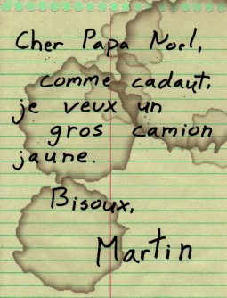

Gluggagægir (Glugg to his friends) has been employed by the North Pole for a long, long time. Although he started his career as a modest candy cane painter, he worked his way steadily up the Elvin professional ladder along the years. Reindeer wrangler, eggnog tester, rubber duck tuner, cookie engineer, he's done it all. And right now he's enjoying what he thinks is his funniest job so far: member of the North Pole elite IT staff.
It's under that function that, a few weeks ago, he got briefed about a skunk work project commissioned by the Big Red himself. Although he's not at liberty to reveal much information about it at the moment, let's just say that it has to do with children letters. His part of the project was to come up with a way to automatically spellcheck those letters.
No problem, he thought. He was going to use Text::SpellChecker, a nice wrapper around Text::Aspell that—among other things— provides context and globally replaces words. And, indeed, a few typed lines later, he was happily sending in his brand new script to be added to the North Pole production system.
And that's when the cookie dough hit the Christmas wreath. Poor Glugg, it turned out, had overlooked two things...
The first was a internal detail of Text::SpellChecker: the module creates a new instance of a Text::Aspell object each time it spellcheck a word. Not a big deal if one goes through a single text, a much bigger deal if one deals with a system processing the letters of all the children of the world. The system, as it was, just wasn't optimized enough.
But the second problem was, by far, the worst. Although the children's letters were written in all languages, Text::SpellChecker objects couldn't be configured away from the default. The way Glugg implemented his script, the wishes of all non-English speaking children would be "corrected" into gibberish. Catastrophe!
Needless to say, Glugg was deeply ashamed of the high-handed way he dealt with his part of the project. Now in full knowledge of his requirements, and pitfalls of his first solution, he retreated to his gingerbread cube and hacked1 at Text::SpellChecker till he got it working just the way he wanted. Which, happily enough, didn't take too long. He even had the time to add the functionality developed by his colleague Fródusleikir to auto-detect a letter's language.
$ spellomatic < letter-61358.txt
--- original letter:
Cher Papa Noel,
Comme cadaut, je veux un gros camion jaune.
Bisoux,
Martin
--- corrected letter:
Cher Papa Noël,
Comme cadeau, je veux un gros camion jaune.
Bisou,
Martin
Once again, everything was well with the North Pole computer systems. And now that Glugg's part of the project was up and running, it was time to execute the next step of Santa's secret project. But this, boys and girls, is a story for another day...
1 #!/usr/bin/perl 2 3 use strict; 4 use warnings; 5 6 use Text::SpellChecker; 7 use Lingua::Ident; 8 9 my $letter = join '', <>; 10 11 print "--- original letter:\n\n$letter\n\n"; 12 13 # TODO: add all the languages of the world. -- Glugg 14 my $ident = Lingua::Ident->new( map "data.$_" => qw/ en fr de / ); 15 16 my $speller = Text::SpellChecker->new( 17 text => $letter, 18 lang => $ident->identity($letter), 19 ); 20 21 while ( my $word = $speller->next_word ) { 22 # just take the first suggestion, 23 # if there is one 24 my ($corrected) = $speller->suggestions; 25 #Bonus feature 26 $speller->replace_all( new_word => $corrected ) if $corrected; 27 } 28 29 print "--- corrected letter:\n\n", $speller->text, "\n\n"; 30 31 __END__1. …and submitted it to RT of course.